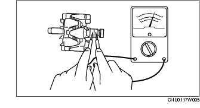
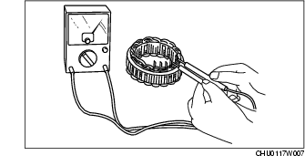
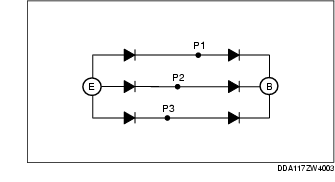
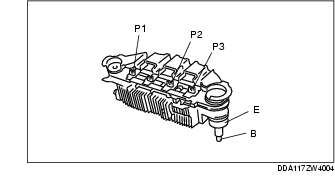

Generator inspection [ZY]
- • Do not apply voltage B directly to the generator D terminal, otherwise it could damage the internal parts of the generator (power transistor).
Generator Warning Light
1. Verify that the battery is fully charged.
2. Verify that the drive belt deflection/tension is within the specification. (See DRIVE BELT INSPECTION [ZY].)
3. Turn the ignition switch to the ON position and verify that the generator warning light illuminates.
- • If the light does not illuminate, inspect the generator warning light, instrument cluster, and the PCM.
4. Verify that the generator warning light turns off after the engine is started.
- • If the light does not turn off, inspect whether any of the following DTCs are displayed: P0112, P0113, P2502, P2503, P2504. (See ON-BOARD DIAGNOSTIC TEST [ZY].)
Generator
Voltage
1. Verify that the battery is fully charged.
2. Verify that the drive belt deflection/tension is within the specification. (See DRIVE BELT INSPECTION [ZY].)
3. Turn off all electrical loads.
4. Start the engine and verify that the generator rotates smoothly without any noise while the engine is running.
5. Measure the voltage at each terminals.

Generator standard voltage (reference value) [IG-ON] Generator standard voltage (reference value) [Idle, 20 °C {68 °F}]
- Terminal B: 13.0-15.0 V
- Terminal P: Approx. 3.0-8.0 V
- Terminal D: Turn the electrical loads (headlight, blower motor, rear window defroster) on and verify that the voltage reading increases.
Current
1. Verify that the battery is fully charged.
2. Verify that the drive belt deflection/tension is within the specification. (See DRIVE BELT INSPECTION [ZY].)
3. Disconnect the negative battery cable.
4. Connect a tester capable of reading 120 A or more between generator terminal B and the wiring harness.
5. Connect the negative battery cable.
6. Turn off all electrical loads.
7. Start the engine.
8. Start the engine and increase the engine speed to 2,000-2,500 rpm.
- • When the electrical load of the vehicle is low, specified current will not be verified although the generator is normal. In this case, increase the electrical load (by turning on the headlight and leave it for a while, then discharge the battery or by similar methods) and recheck.
- • When the generator itself or the ambient temperature are too high, specified current will also not be verified. In this case, cool down the generator and recheck.
9. Turn the following electrical loads on and verify that the current reading increases.
Generator generated current minimum value- 70 % of the nominal output current (nominal output current: 90 A)
- [ambient temp. 20 °C {68 °F}, voltage 13.0-15.0 V, both engine and generator are hot]
PCM and generator shearing inspection
1. Inspect as follows:
- *1 : Headlights, blower motor, rear window defroster, and stop lamp.
- *2 : If the generator field coil duty value does not change when electrical loads (headlights, blower motor, rear window defroster, stop lamp etc.) are on or off, inspection with discharged battery is needed.
Generator Inner Parts
Rotor
1. Measure the resistance between the slip rings using an ohmmeter.

Resistance [20 °C {68 °F}]
2. Verify that there is no continuity between the slip ring and core using an ohmmeter.

3. Inspect the slip ring surface condition.
Stator coil
1. Inspect for continuity between the stator coil leads using an ohmmeter.

2. Verify that there is no continuity between the stator coil leads and the core using an ohmmeter.

Brush
1. Inspect brushes for wear.

Standard brush length Minimum brush length
Brush spring
1. Measure the force of the brush spring using a spring pressure gauge.
2. Read the spring pressure gauge at the brush tip projection of 2 mm {0.079 in}.

Standard spring force Minimum spring force
Rectifier
1. Inspect for continuity of the diodes using an ohmmeter.


Bearing
1. Inspect for abnormal noise, looseness, and sticking.